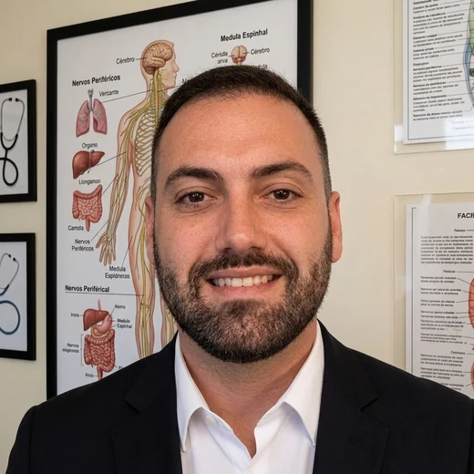
Carlos Eduardo Roncato Gavioli
Psiquiatra
CRM 27373 · RQE 44651
Avaliação diagnóstica, condução do tratamento medicamentoso e acompanhamento clínico durante toda a internação.
Atendimento online 24 horas para internação em dependência química e alcoolismo. Unidades de alto padrão com infraestrutura hospitalar de excelência e equipe multidisciplinar completa.
Conheça nossos tratamentosLinha de Apoio Ativa: Atendimento Imediato e Sigiloso
Um lugar pensado para recomeçar.
Uma unidade cercada de verde, com espaços amplos para o cuidado, a convivência e o descanso. Conheça por dentro o lugar onde o tratamento acontece.
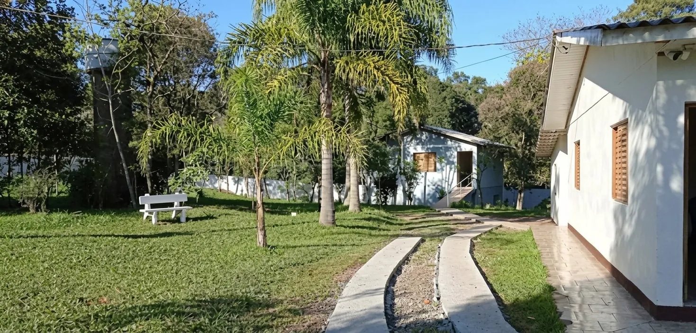
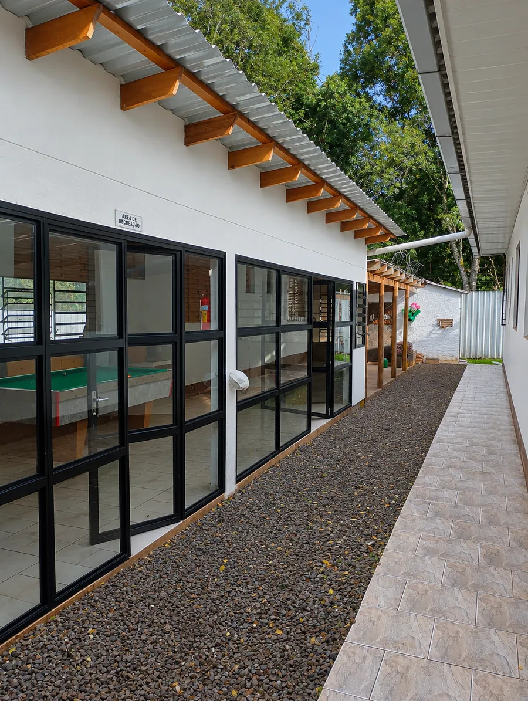
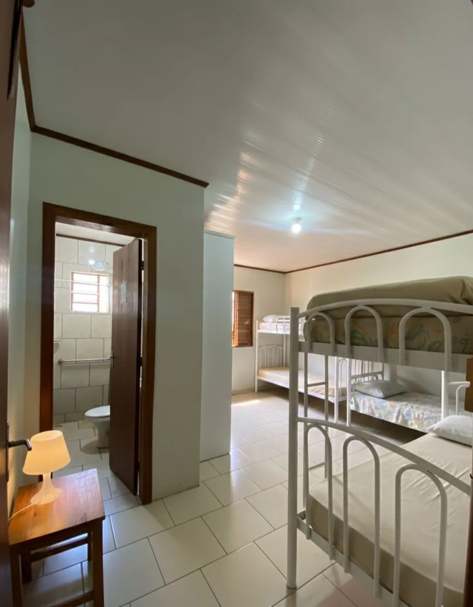
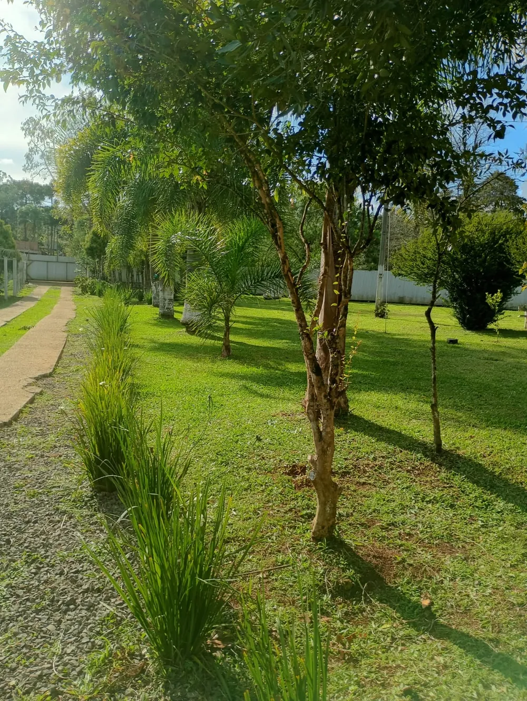
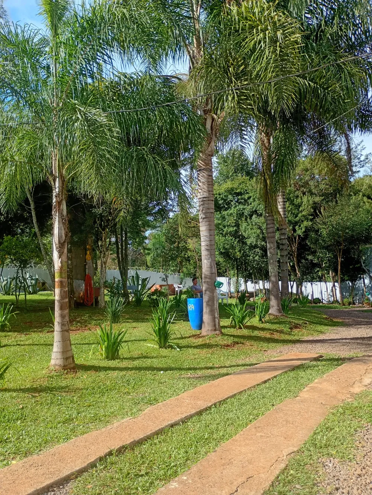
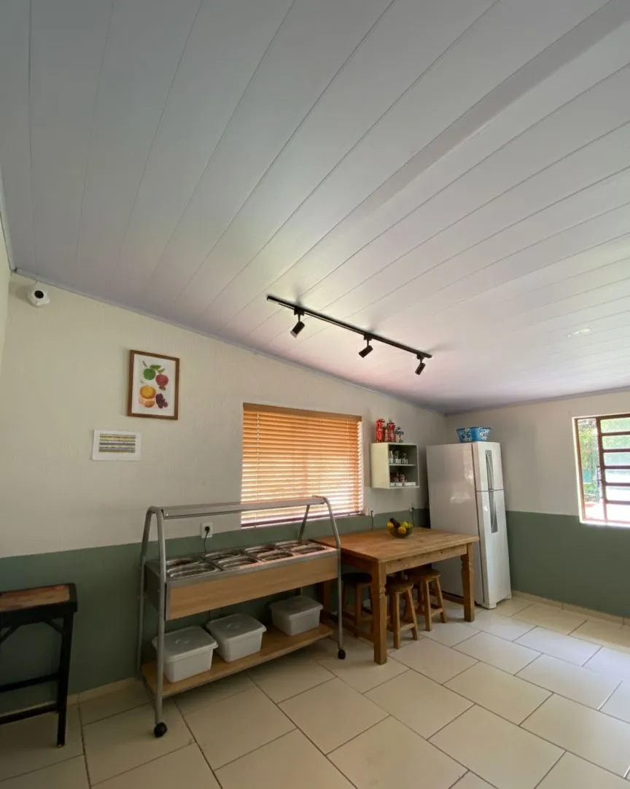
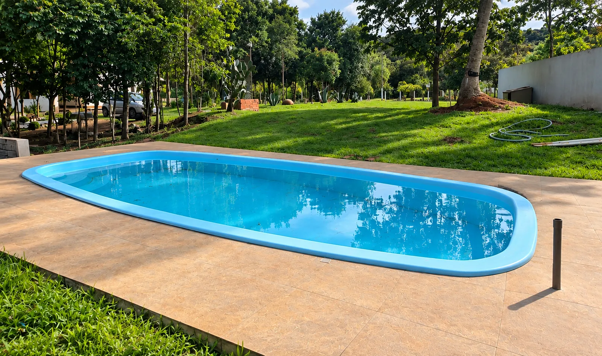
Gramado, palmeiras e caminhos entre as casas da unidade, para caminhar e respirar com calma.
Segurança e cuidado a qualquer hora
Equipe de plantão e monitoramento em toda a unidade, de dia e de noite.
Profissionais qualificados atuando em sinergia para proporcionar o melhor plano de recuperação.

Psiquiatra
CRM 27373 · RQE 44651
Avaliação diagnóstica, condução do tratamento medicamentoso e acompanhamento clínico durante toda a internação.
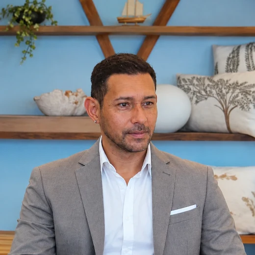
Psicólogo & Psicanalista
CRP 07301649
Atendimento individual e em grupo, com escuta voltada às causas da dependência e à prevenção de recaída.
Enfermeira
COREN 189698 ENF
Pós-graduada em Urgência e Emergência Pré e Intra-hospitalar, Estomaterapia e Docência.
Nutricionista
Sócio Proprietário
Planos alimentares individualizados para recuperação nutricional e restabelecimento físico ao longo do tratamento.
Assistente Social
CRESS 11641
Recuperação social e fortalecimento psicológico durante a internação.
Técnica de Enfermagem
COREN 1036503 TE
Monitoramento contínuo dos parâmetros de saúde e administração segura de medicações.
Cada etapa tem um objetivo claro e uma equipe dedicada. A família acompanha o caminho do início ao fim.
O primeiro contato
Cuidado na fase mais delicada
Entender a causa, não só o sintoma
A volta para casa, com apoio
Conversa sigilosa com a família, avaliação do caso e orientação sobre a modalidade de internação mais adequada: voluntária, involuntária ou compulsória.
Acompanhamento médico e de enfermagem contínuo nos primeiros dias, para atravessar a abstinência com segurança.
Psicoterapia individual e em grupo, rotina estruturada, alimentação acompanhada e participação da família no processo.
Planejamento da alta, prevenção de recaída e acompanhamento pós-internação para sustentar as escolhas no dia a dia.
A rede Recomeço à Vitória nasceu com o propósito de redefinir o tratamento para dependência química no Brasil. Oferecemos um ambiente terapêutico altamente qualificado, focado no resgate da dignidade e integridade física e emocional de cada paciente.
Aliando ciência, medicina de ponta e profundo acolhimento humanizado, desenvolvemos metodologias personalizadas que envolvem não apenas o paciente, mas toda a sua estrutura familiar no processo de cura.
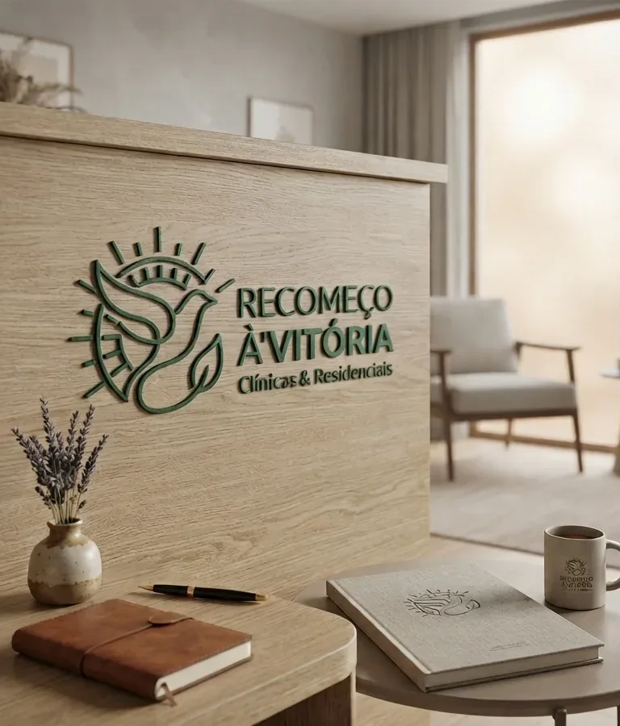
Equipe de pronto atendimento e regulação médica disponíveis a qualquer hora do dia ou da noite.
Corpo clínico composto por psiquiatras, psicólogos, terapeutas, enfermeiros e nutricionistas dedicados.
Instalações acolhedoras que reúnem o conforto de uma residência e a segurança de um ambiente hospitalar.
Garantia absoluta de privacidade e confidencialidade em todas as etapas do acolhimento e tratamento.
Protocolos embasados cientificamente e adequados ao estágio de cada indivíduo.
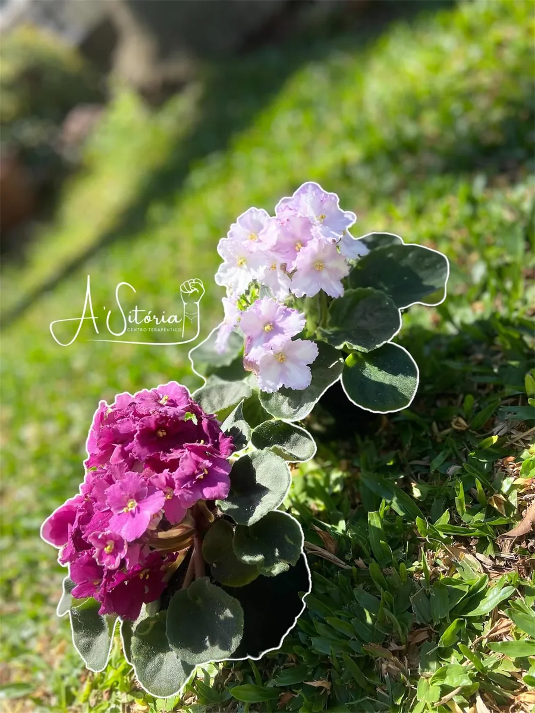
Acolhimento humanizado para pacientes que reconhecem a necessidade de ajuda e buscam ativamente a reabilitação.
Solicitada pela família ou responsável legal, com indicação médica, para preservar a vida do paciente que perdeu a capacidade de decisão. Realizada conforme a Lei 13.840/2019.
Acompanhamento médico contínuo e farmacológico na primeira fase, amenizando os sintomas da abstinência de forma segura.
Abordagem multidisciplinar focada nas especificidades físicas e comportamentais da dependência do álcool.
Terapia cognitivo-comportamental aplicada de forma intensiva para o tratamento contra diversas substâncias psicoativas.
Prevenção à recaída e reinserção social assistida, garantindo que o paciente mantenha a sobriedade no retorno ao lar.
A verdadeira vitória se reflete nas histórias de transformação e nas famílias reestruturadas.
"A internação involuntária do meu filho foi a decisão mais difícil da minha vida, mas a equipe do Recomeço à Vitória nos acolheu com uma humanidade e competência técnica incríveis. Hoje ele está recuperado e trabalhando conosco novamente. Eternamente grata."
"Buscamos a clínica em um momento de total desespero. O acompanhamento psiquiátrico de alto padrão e o ambiente calmo foram fundamentais na reabilitação do meu marido. O respeito ao paciente é absoluto."
Trabalhamos lado a lado com clínicas que compartilham o nosso padrão de acolhimento, estrutura e ética. Assim encontramos a unidade certa para cada história.
“Acreditamos que cuidar vai além do diagnóstico.”
Um acompanhamento construído através da escuta, do acolhimento e de uma abordagem individualizada para cada história, em uma casa cercada de jardins no interior gaúcho.
Não encontrou o que procurava? Fale com a nossa equipe agora, a qualquer hora.
Tirar uma dúvidaO contato começa pelo telefone ou WhatsApp, a qualquer hora. Nossa equipe escuta a família, entende a situação e orienta sobre os próximos passos, com total sigilo e sem compromisso.
A internação pode ser voluntária, quando o próprio paciente concorda; involuntária, a pedido da família ou responsável legal, com indicação médica; ou compulsória, determinada pela Justiça. As modalidades seguem a Lei 10.216/2001 e a Lei 13.840/2019.
O valor depende da modalidade de internação, do tempo previsto e das necessidades de cada paciente. Nossa equipe informa os custos e verifica a cobertura do seu plano de saúde no primeiro atendimento.
Sim. Orientamos a família sobre a logística de remoção até a unidade e explicamos como ela acontece em cada modalidade de internação.
Sim. A família faz parte do processo terapêutico. A forma e a frequência do contato são combinadas com a equipe de acordo com a etapa do tratamento.
Totalmente. Todas as informações do paciente e da família são tratadas com confidencialidade em todas as etapas, do primeiro contato à alta.
Nossa equipe de acolhimento e regulação médica está disponível agora mesmo para sanar dúvidas sobre custos, cobertura de convênios, formas de internação voluntária e involuntária e logística de remoção.
Fale com a Coordenação 24h (54) 99674-1966Converse em minutos com um coordenador clínico, com total discrição.
Iniciar Conversa